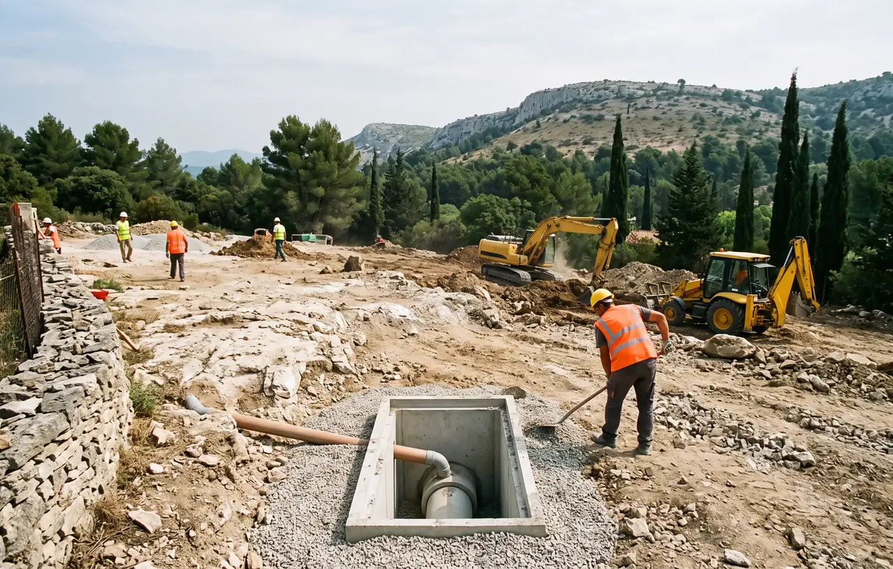

Viabilisation de Terrain Professionnelle à Salon-de-Provence
La viabilisation d'un terrain consiste à le raccorder à l'ensemble des réseaux publics pour le rendre constructible. À Salon-de-Provence, ville en pleine expansion avec de nombreux lotissements neufs qui se développent dans la plaine de la Crau, la viabilisation représente une étape incontournable avant toute construction de maison. Chez STP Terrassement, nous réalisons l'ensemble des travaux de VRD : tranchées, pose de canalisations, fourreaux, regards et raccordements aux réseaux existants. Consultez nos réalisations.
Tranchées Multi-Réseaux et Raccordements à Salon-de-Provence
La viabilisation d'un terrain à Salon-de-Provence nécessite la réalisation de tranchées pour acheminer les différents réseaux depuis les branchements publics jusqu'à la future construction. Le sol alluvionnaire de la plaine de la Crau, composé de galets et de graviers, se creuse efficacement à la trancheuse mécanique ou à la pelle mécanique équipée d'un godet étroit. La platitude du terrain simplifie le calcul des pentes d'écoulement gravitaire pour l'assainissement.
Nos équipes réalisent des tranchées communes lorsque les réseaux suivent le même itinéraire, en respectant les distances réglementaires entre chaque réseau (minimum 20 cm entre eau et électricité, 30 cm entre électricité et télécoms). Les fourreaux TPC (rouge pour l'électricité, vert pour les télécoms, bleu pour l'eau) sont posés sur un lit de sable de 10 cm et recouverts de sable avant le remblaiement. Un grillage avertisseur de la couleur correspondante est installé à 30 cm au-dessus de chaque réseau.
- Tranchées multi-réseaux optimisées
- Fourreaux TPC normalisés par couleur
- Lit de sable et grillage avertisseur
- Respect des distances réglementaires
- Remblaiement compacté par couches
- DICT et coordination concessionnaires
Prix indicatif : La viabilisation d'un terrain à Salon-de-Provence coûte entre 5 000€ et 15 000€ selon la distance aux réseaux publics. Le terrain plat réduit souvent les coûts. Demandez votre devis gratuit.


Assainissement et Gestion des Eaux
Le raccordement au tout-à-l'égout est obligatoire à Salon-de-Provence lorsque le réseau d'assainissement collectif passe à proximité de votre terrain. Les canalisations en PVC CR8 de diamètre 160 à 200 mm sont posées avec une pente minimale de 3 cm par mètre pour garantir l'écoulement gravitaire des eaux usées. Des regards de visite en béton ou PVC sont installés à chaque changement de direction et tous les 30 mètres en ligne droite.
Pour les terrains éloignés du réseau collectif dans les zones rurales autour de Salon, un assainissement non collectif (fosse toutes eaux + épandage ou micro-station) peut être nécessaire. Le sol perméable de la Crau est généralement favorable à l'épandage. La gestion des eaux pluviales est également intégrée à la viabilisation, avec la mise en place de puisards, puits d'infiltration ou raccordement au réseau pluvial existant.
- Raccordement tout-à-l'égout PVC CR8
- Regards de visite béton ou PVC
- Assainissement non collectif si nécessaire
- Gestion eaux pluviales (puisards, infiltration)
- Pente minimale 3 cm/m garantie
Réseaux à Raccorder pour Viabiliser Votre Terrain
Eau Potable
Raccordement au réseau d'eau potable de Salon-de-Provence. Tranchée depuis le compteur en limite de propriété jusqu'à la maison. Canalisation en PEHD diamètre 25 ou 32 mm. Pose du regard compteur et coordination avec le service des eaux.
- Tranchée 80 cm de profondeur
- Canalisation PEHD alimentaire
- Regard compteur en limite
- Vanne d'arrêt générale
- Grillage avertisseur bleu
Électricité
Raccordement au réseau électrique Enedis à Salon-de-Provence. Tranchée et pose de fourreau TPC rouge diamètre 90 mm depuis le coffret de branchement jusqu'au tableau électrique. Coordination avec Enedis pour le raccordement définitif.
- Fourreau TPC rouge diam. 90
- Tranchée 80 cm minimum
- Coffret en limite de propriété
- Grillage avertisseur rouge
- Coordination Enedis
Télécoms et Fibre
Raccordement télécom et fibre optique à Salon-de-Provence. Pose de fourreau TPC vert diamètre 45 mm avec chambre de tirage. Salon-de-Provence est progressivement couverte en fibre FTTH, la viabilisation intègre les fourreaux adaptés.
- Fourreau TPC vert diam. 45
- Chambre de tirage
- Compatible fibre FTTH
- Grillage avertisseur vert
- Coordination opérateurs
Les Étapes de la Viabilisation à Salon-de-Provence
La viabilisation d'un terrain suit un processus méthodique pour garantir des raccordements conformes et durables.
Étude et Démarches Administratives
Avant le démarrage des travaux, les DICT (Déclarations d'Intention de Commencement de Travaux) sont envoyées à tous les concessionnaires de réseaux. Un plan de viabilisation est établi en coordination avec la mairie de Salon-de-Provence et les différents gestionnaires de réseaux (SEM, Enedis, GRDF, opérateurs télécoms).
Ouverture des Tranchées
Les tranchées sont creusées à la pelle mécanique ou à la trancheuse dans le sol alluvionnaire de la Crau. La profondeur varie de 60 cm à 1,20 m selon les réseaux. Les tranchées communes permettent de regrouper plusieurs réseaux en respectant les distances réglementaires. Le fond de tranchée est nivelé et un lit de sable est mis en place.
Pose des Réseaux
Les canalisations (eau en PEHD, assainissement en PVC CR8) et les fourreaux TPC (électricité, télécoms) sont posés sur le lit de sable. Les regards de visite sont installés aux jonctions. Les réseaux sont enrobés de sable et un grillage avertisseur de la couleur réglementaire est posé à 30 cm au-dessus.
Remblaiement et Raccordements
Les tranchées sont remblayées par couches de 30 cm avec compactage mécanique. Les raccordements définitifs sont réalisés en coordination avec chaque concessionnaire. Un plan de récolement est établi pour localiser précisément chaque réseau enterré. Le terrain est remis en état pour accueillir les travaux de fondations.
Questions Fréquentes - Viabilisation Salon-de-Provence
Quel est le coût de la viabilisation d'un terrain à Salon-de-Provence ?
La viabilisation coûte entre 5 000€ et 15 000€ selon la distance aux réseaux publics et le nombre de raccordements. Le terrain plat de la Crau réduit les coûts de terrassement. Demandez votre devis gratuit.
Quels réseaux faut-il raccorder pour viabiliser un terrain ?
La viabilisation complète comprend : eau potable, électricité, assainissement (tout-à-l'égout ou individuel), télécommunications (fibre/cuivre) et éventuellement gaz. STP Terrassement réalise toutes les tranchées et la pose des fourreaux.
Combien de temps dure la viabilisation ?
Les travaux de terrassement et pose des réseaux durent 1 à 3 semaines. Les raccordements par les concessionnaires (Enedis, service des eaux) nécessitent des délais administratifs supplémentaires de 2 à 6 semaines.
Le terrain de la Crau facilite-t-il la viabilisation ?
Oui, le terrain plat et le sol alluvionnaire facilitent le creusement des tranchées et simplifient les pentes d'écoulement gravitaire. Les nouveaux lotissements de Salon-de-Provence bénéficient de ces conditions favorables pour une viabilisation optimisée.
Viabilisez-vous les lotissements neufs à Salon-de-Provence ?
Oui, STP Terrassement est spécialisé dans la viabilisation de lotissements neufs. Terrassement général, tranchées multi-réseaux, pose des canalisations, regards et voiries en enrobé. Coordination efficace avec tous les concessionnaires.
Pourquoi Choisir STP Terrassement pour Votre Viabilisation à Salon-de-Provence ?
STP Terrassement réalise la viabilisation de terrains depuis plus de 15 ans à Salon-de-Provence et dans les communes environnantes. Notre expertise en VRD et notre connaissance des sols de la plaine de la Crau nous permettent de vous proposer des solutions efficaces et conformes aux normes. Nous travaillons en étroite coordination avec les concessionnaires locaux (SEM, Enedis, GRDF) pour garantir des raccordements dans les meilleurs délais. Découvrez nos réalisations.